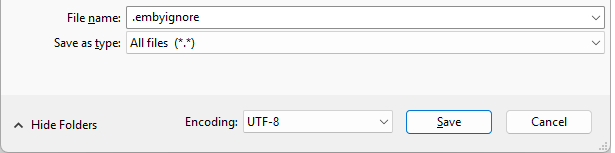
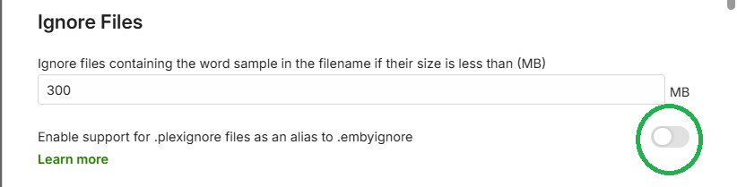
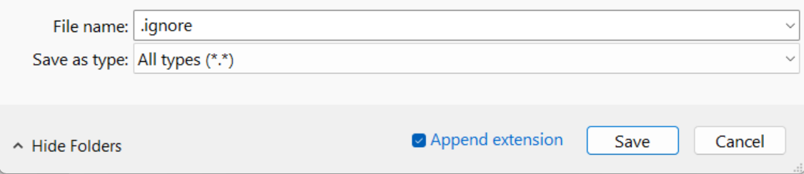

Excluding Files & Folders
Media files can be excluded during a library scan. This article shows how this can be done and gives details of the feature update that came in Emby Server version 4.9.
Emby Server 4.9 and later
Media files can be excluded by adding a file named .embyignore containing the filename(s) path and/or pattern(s) to exclude. This can be added in the root folder of a library or within sub-folders.
On Windows. the .embyignore file can be created using Notepad with the "Save as type" set to "All files (*.*)"

When adding the .embyignore to a root folder of a library, the rules would apply to all folders.
Contents of the .embyignore file
- Comment lines can be added by having a # character at the beginning of the line.
- Blank lines are ignored.
- Multiple patterns / names / paths can be entered on separate lines.
- A wildcard
*can be used for file name / folder name pattern. - Use forward slash character
/for directory separator - even on Windows. - When a directory separator is used, the pattern is relative to the directory holding the
.embyignorefile. Otherwise, the pattern may also match any level below the folder holding the.embyignorefile. - A leading
/in a pattern restricts the action to the directory containing the.embyignore.
Examples
- To ignore all
.pngfiles in a photos library, place an.embyignorefile containing*.pngin the root folder(s) of a photos library. - To ignore all files in a folder, place an
.embyignorefile containing a*in the folder that is to be ignored. - To ignore a folder
private-vidsand all files and folders below it, place an.embyignorefile containingprivate_vids/*in the root folder of the library. - To ignore a specific file e.g.
private-video.mp4, place an.embyignorecontainingprivate-video.mp4in the folder and lower sub-folders. - To ignore files with names starting with
privatein this folder only, place an.embyignorecontaining/private*in the folder.
Support for .plexignore
For your convenience, Emby Server now also supports .plexignore. An option has been added to Library settings for enabling this.

Note
There may be some differences in outcomes between our support of this feature and Plex. The Emby behavior would not match any that are defects in Plex.
Emby Server 4.8
To exclude a folder from the library scan, place a file named .ignore inside the folder.
This will cause Emby to ignore all sub-folders as well.
On Windows. the .ignore file can be created using Notepad with the "Save as type" set to "All types (*.*)"
